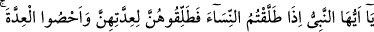
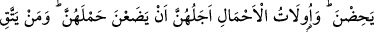

KİM ALLAH’IN
SINIRLARINI AŞARSA
Bismillâhirrahmânirrahîm
1. Ey Peygamber! Kadınları boşayacağınızda, onları iddetlerini gözeterek boşayın
ve iddeti de sayın. Rabbiniz Allah’tan korkun. Apaçık bir hayasızlık yapmaları hâli
bir yana, onları evlerinden çıkarmayın, kendileri de çıkmasınlar. Bunlar Allah’ın
sınırlarıdır. Kim Allah’ın sınırlarını aşarsa, şüphesiz kendine zulmetmiş olur.
Bilemezsin, olur ki Allah, bundan sonra bir durum ortaya çıkarıverir.
2. İddet müddetlerini doldurduklarında onları ya meşru ölçüler içerisinde
(nikâhınız altında) tutun veya onlardan meşru ölçülere göre ayrılın. İçinizden
adâlet sâhibi iki kişiyi de şâhid tutun. Şâhidliği Allah için yapın. İşte bu, Allah’a ve
âhiret gününe inananlara verilen öğüttür. Kim Allah’tan korkarsa, Allah ona bir
çıkış yolu ihsan eder.
3. Ve ona beklemediği yerden rızık verir. Kim Allah’a güvenirse O, ona yeter.